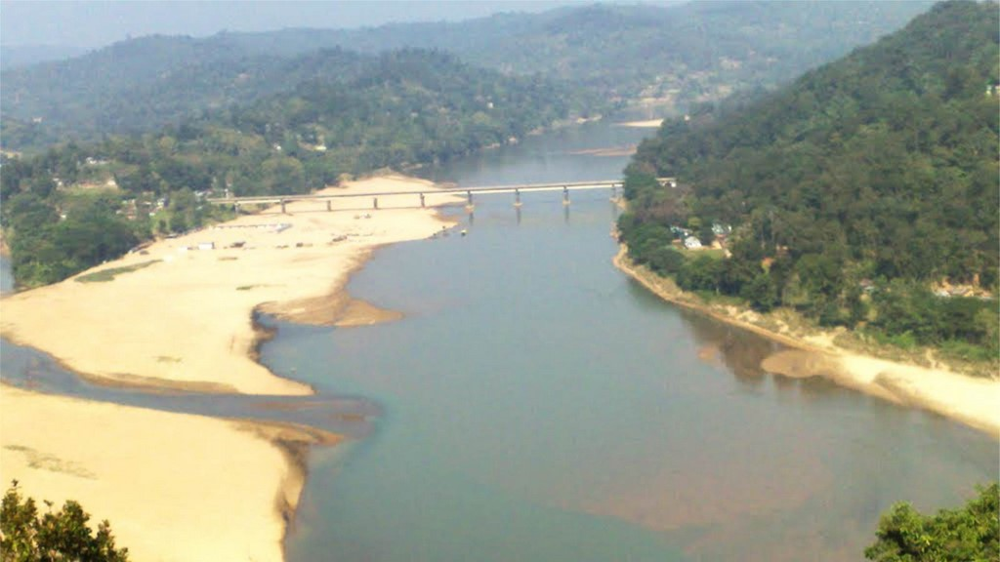

Baghmara
Baghmara lies at a distance of about 280 km from the city of Shillong. It is the headquarters of the South Garo Hills district, lying in the southern part of Meghalaya. It is the only town in the district and makes for an interesting exploration...